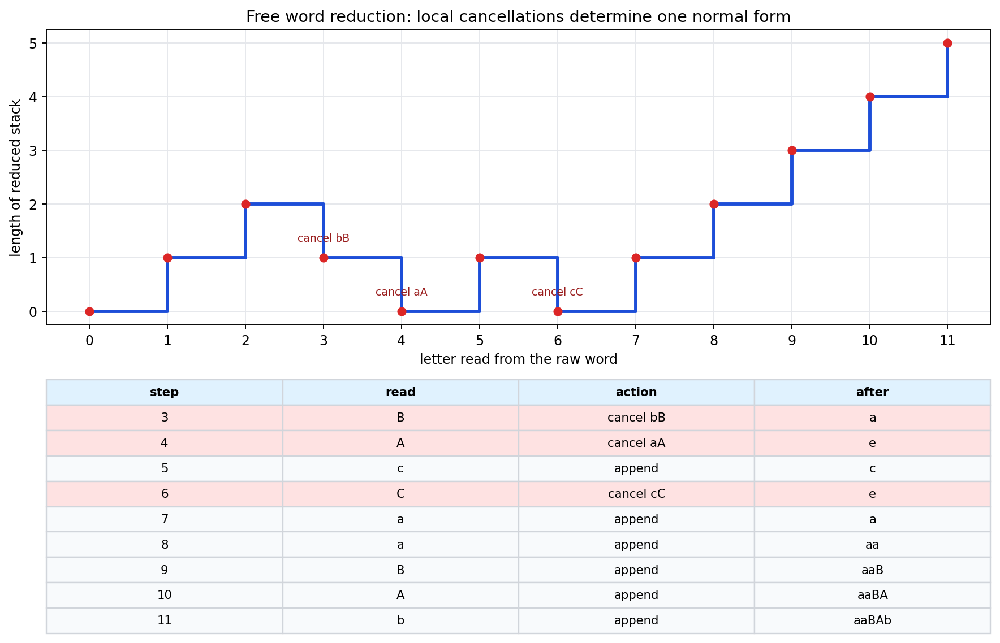
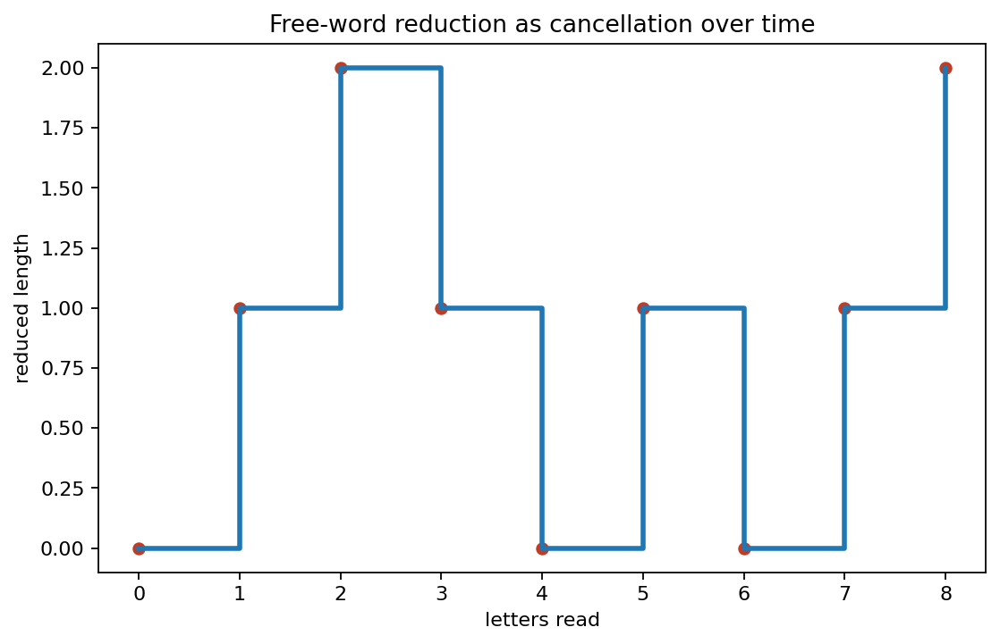
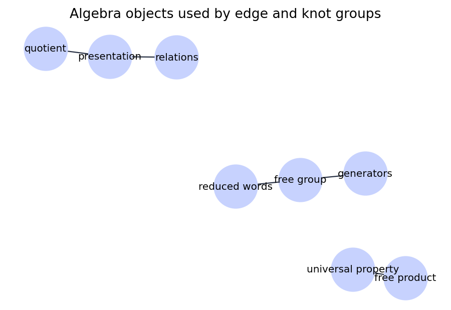
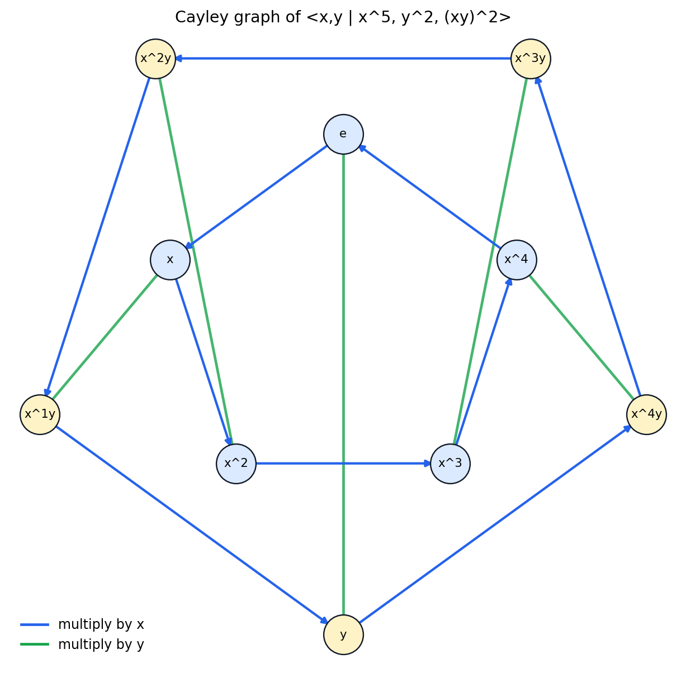
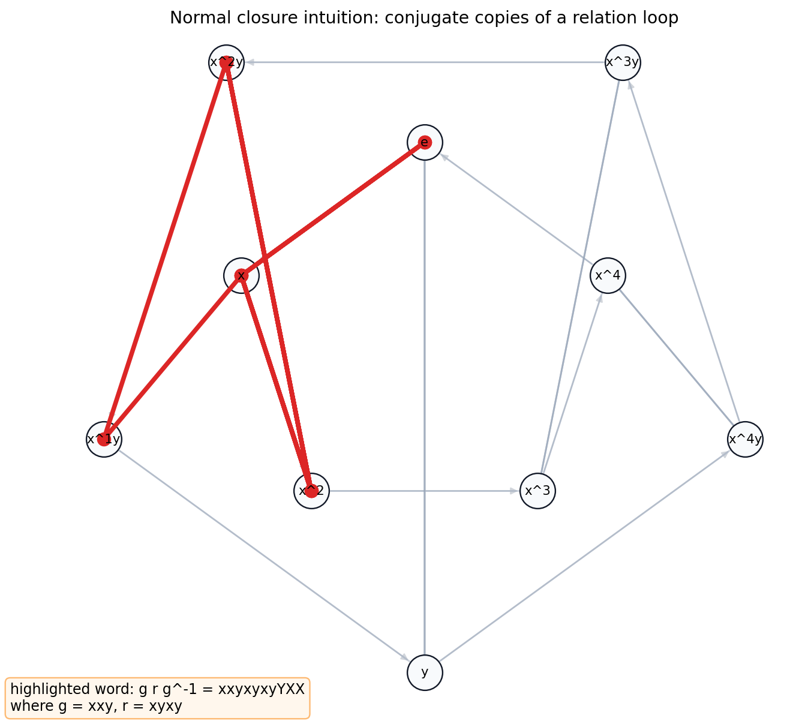
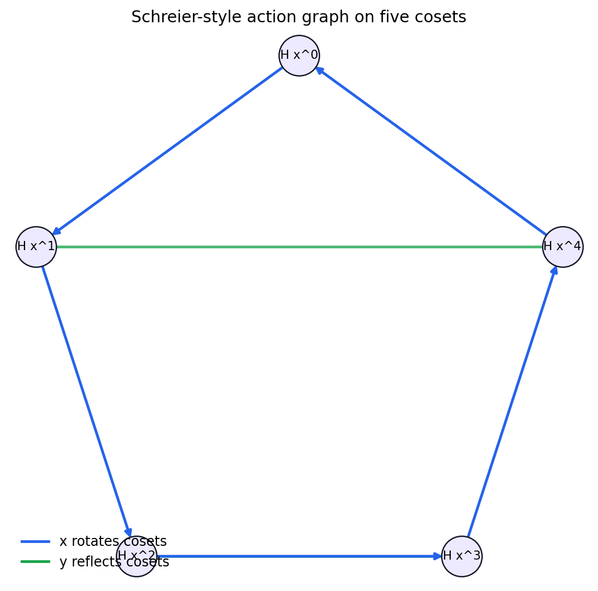
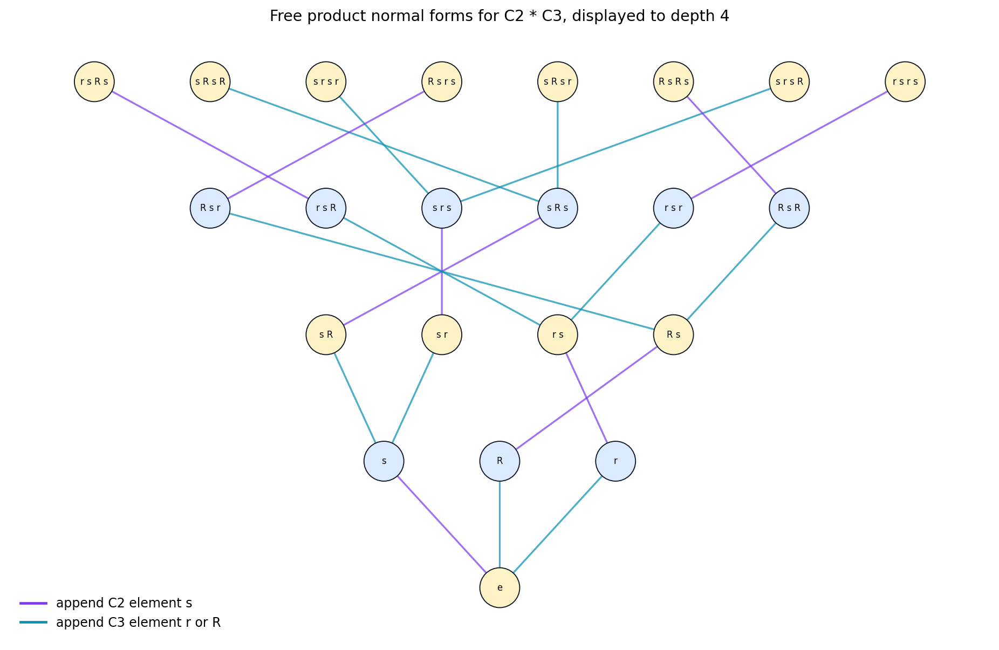
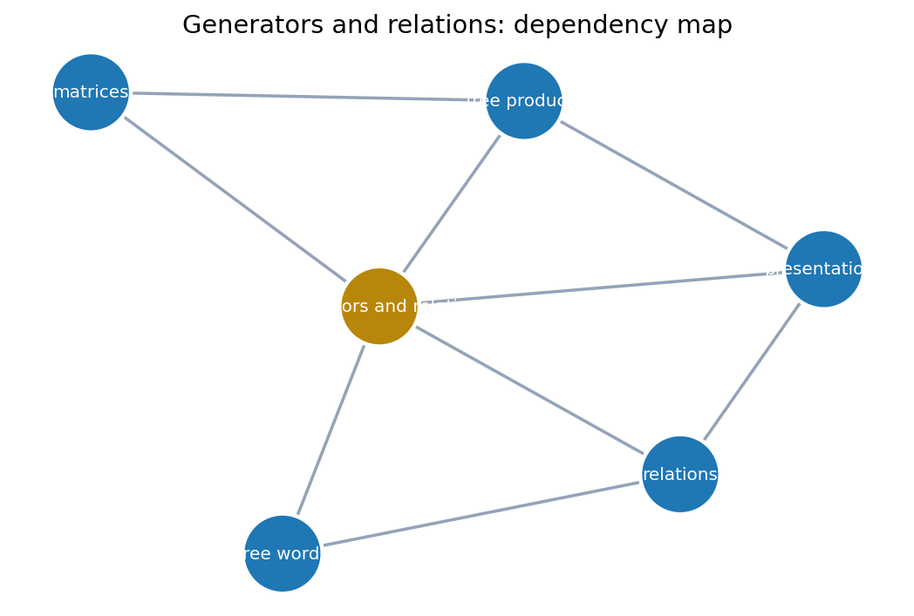

How can a finite list of loops and equations record a group that came from topology?
Source record: Basic-Topology/appendix-generators-and-relations/appendix-generators-and-relations.ipynb.
Choose loops such as \(a,b,c\) or edge symbols \(x,y\).
A path is read as a word: \(a b A c\), where capitals denote inverses.
A filled face contributes a relation word: \(a b A c = e\).
This is the computational bridge used later when topological decompositions produce fundamental-group presentations.

Check file: ../checks/free-word-reduction-checks.json
| step | read | before | action | after |
|---|---|---|---|---|
| 0 | e | start | e | |
| 1 | a | e | append | a |
| 2 | b | a | append | ab |
| 3 | B | ab | cancel bB | a |
| 4 | A | a | cancel aA | e |
| 5 | c | e | append | c |
| 6 | C | c | cancel cC | e |
| 7-11 | aaBAb | e | append tail | aaBAb |
Full trace: ../tables/free-word-reduction-trace.csv


If \(R\) is a chosen list of relation words, the quotient uses the smallest normal subgroup containing them:
Sanity record: ../checks/relation-rewriting-checks.json
| raw word | normal form | state | checks |
|---|---|---|---|
| xyxxy | xxxx | x^4 | preserves action |
| yyxxxxy | xxxxy | x^4y | idempotent |
| xyxyx | x | x | relation removed |
| yxyx | e | e | identity |
Full examples: ../tables/dihedral-relation-rewriting-table.csv

Five \(x\)-steps wind around a rotation cycle and return.
Two reflection steps undo each other.
The alternating square closes at every starting state.
The graph checks strong connectivity and relation closure in ../checks/appendix-final-sanity-checks.json.
Normal-closure diagnostic: ../checks/normal-closure-checks.json


An action graph can expose relation failures on a smaller state space before one tries to enumerate a full Cayley graph.
Action checks: ../checks/schreier-action-checks.json
If \(G=\langle X\mid R\rangle\) and \(H=\langle Y\mid S\rangle\), then the free product keeps both sets of generators and both sets of relations:

| raw tokens | normal form | reason |
|---|---|---|
| s s r | r | \(s^2=e\) |
| r r r s | s | \(r^3=e\) |
| s r R s r | r | factor products collapse |
| r s r s R | r s r s R | already alternating |
Data source: ../tables/free-product-normal-form-examples.csv
| presentation | relations | matrix rows | rank lower bound |
|---|---|---|---|
| free_F2 | none | [] | 2 |
| commuting_torus_Z2 | xyXY | [[0,0]] | 2 |
| dihedral_D10 | xxxxx, yy, xyxy | [[5,0],[0,2],[2,2]] | 0 |
| trefoil_style_braid | abaBAB | [[1,-1]] | 1 |
Full table: ../tables/presentation-abelianized-relation-matrices.csv
Lab checks: ../checks/presentation-lab-checks.json

{kind=link}
{kind=link}